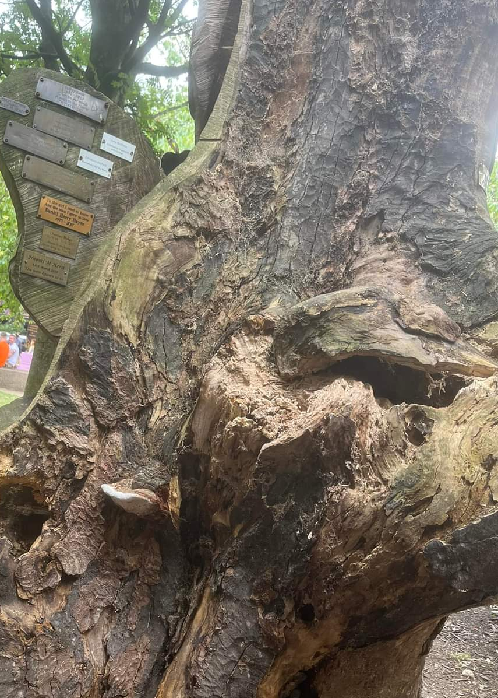
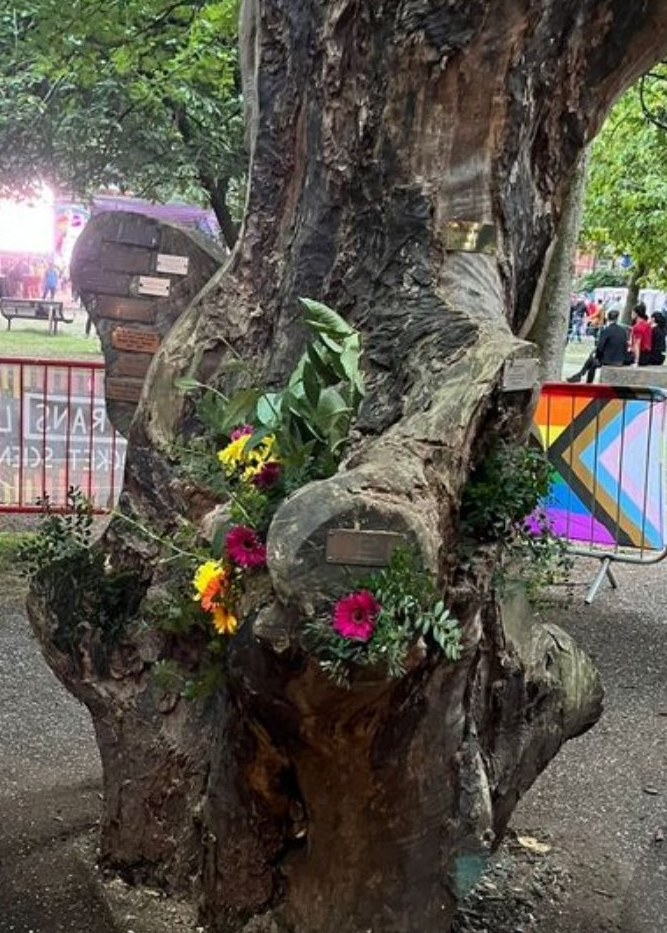

22nd - 23rd October, 2022
16:00 -> 16:00 BST || 11:00 -> 11:00 EDT || 08:00 -> 08:00 PDT
Phoenix CTF is a 24 hour long charity competition for people to learn something new, meet friends, and win prizes!
On top of your usual cybersecurity challenges, we also have a virtual Scavenger Hunt; A great way to clear your head and start fresh on those impossible pwn challenges!
This competition is family and beginner friendly, and caters to a wide range of skill levels, from completely non-technical to advanced.
All proceeds are going the reconstruction of the National Trans Memorial, which was tragically burned down at Manchester Pride.
We deserve the right to grieve and rest in dignity, replacing the National Trans Memorial is one small step in that process.
While the memorial has seen continual neglect and misuse since it was first raised, the way that security around the memorial was handled during Manchester Pride was unacceptable. We want to make it clear that no matter what people try and burn down, and no matter how hard people try to bury our history, we will rise from the ashes.
We are the Trans Tech Tent and we work to eliminate digital poverty and build community among trans people in a safe environment.
We've partnered with allies in the tech community to bring people together and make a difference. We hope that rallying around a common cause will also build bridges and open doors that enrich everyone's lives.